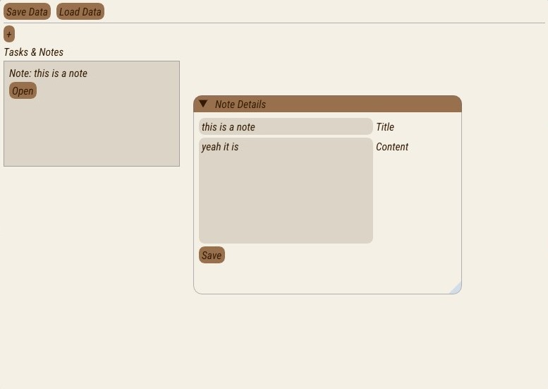
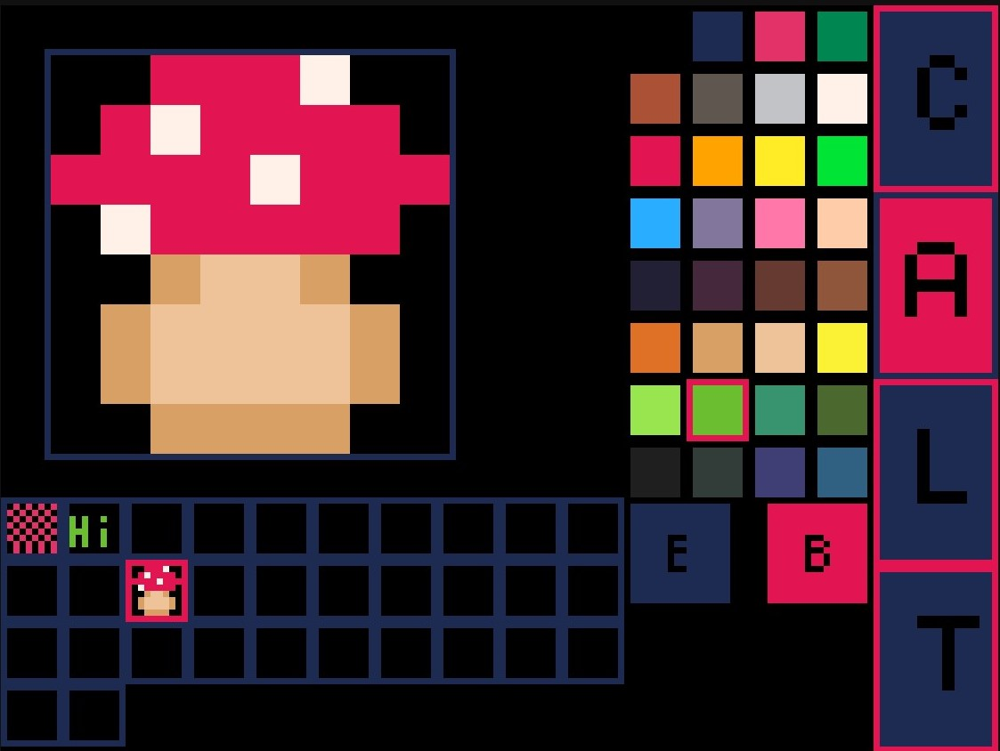
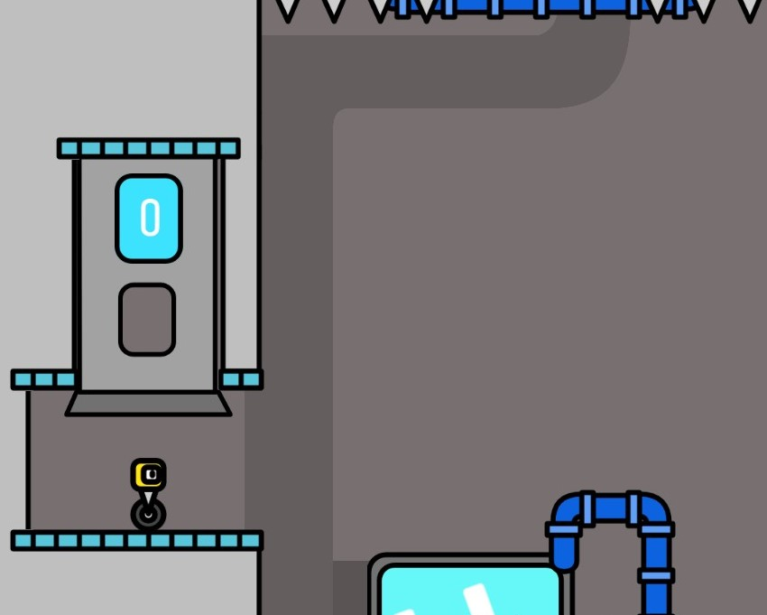
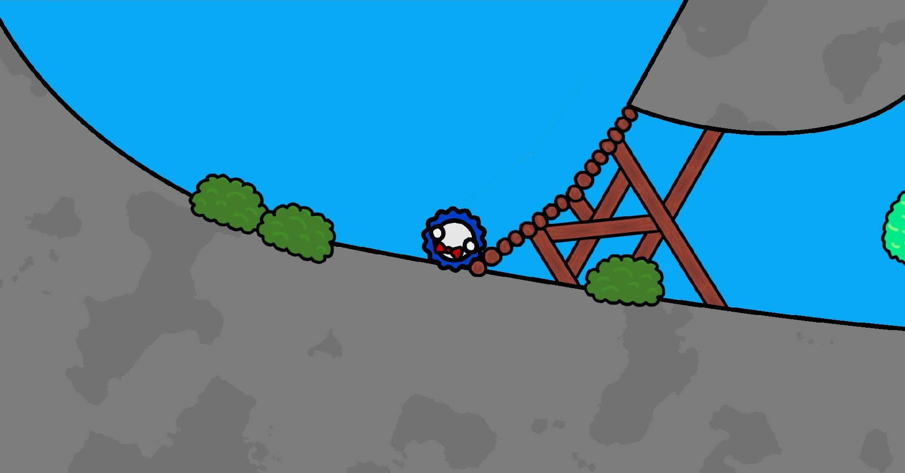
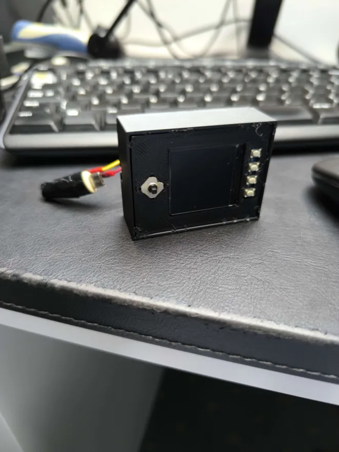
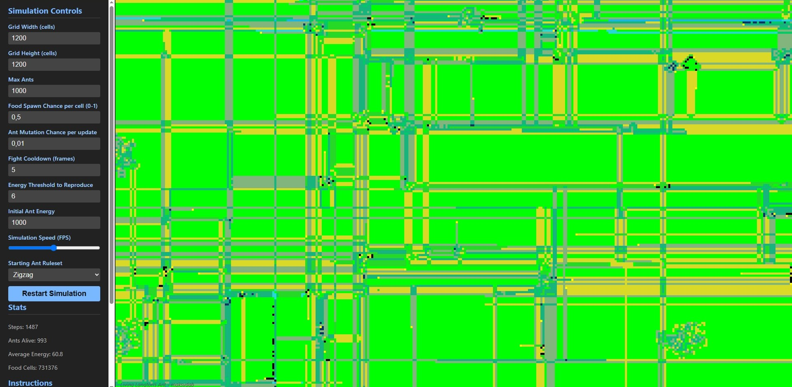
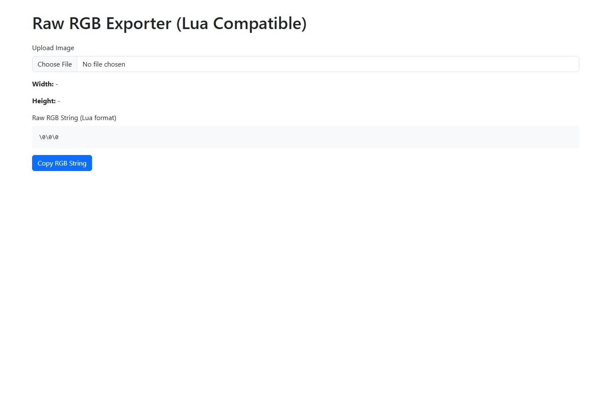
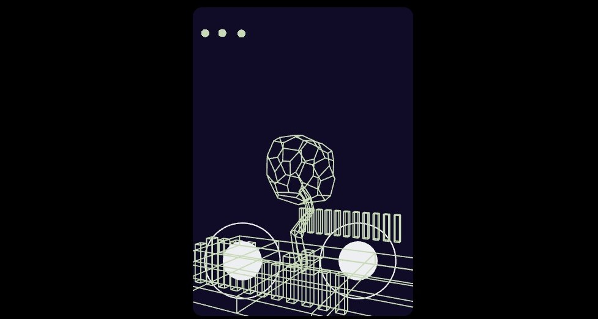

Notetaking App
A simple note-taking app I made in C++.

I’m maksydab. I'm a programmer passionate about creating and learning new things. I love to create stuff. Currently, I can code in C++, JS, TS, Python, GDScript, React, Next.js, Lua, HTML, and CSS. I'm a quick learner, so even if I don't know the technology your project uses, I will quickly learn it.







Castle img to raw rgb
https://castle-img-to-raw-rgb.netlify.app - an page i made to convert images to my rgb engine in castle

An unfinished shooter game
Simple shooter game with so much juicy effects in it

3d renderer in castle app
a lil 3d renderer in 2d based, castle.xyz which means eveyrthing is possible https://castle.xyz/d/iU1yhBsYC7